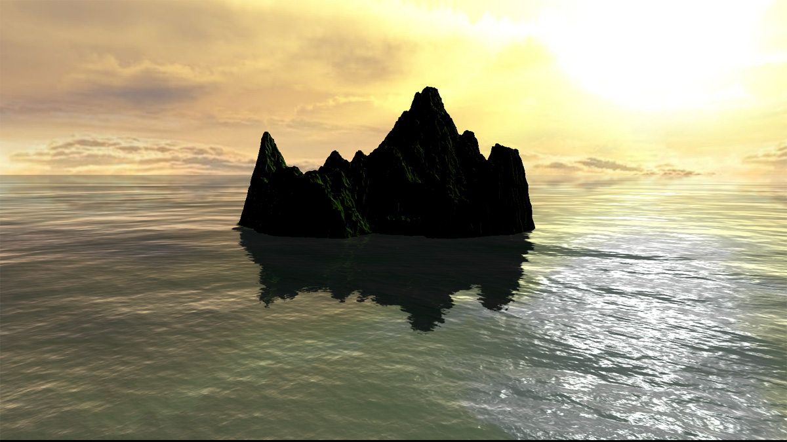

ocean - Realistic water shader for Three.js
This project propose an implementation of a three.js shader to provide a realistic plane water effect. It can be used to render water in some situations like complete ocean or small surface of water in real time.
Demos
Dependencies
- Three.js r70 to render the scene : https://github.com/mrdoob/three.js/
- JQuery 1.10.2 as a helper : https://github.com/jquery/jquery
- Terrain-generator for procedural terrain generation : https://github.com/jbouny/terrain-generator
Sources
Slayvin - http://slayvin.net Use of the flat mirror implementation for three.js as a base : https://code.google.com/p/mirror-three-js/source/browse/FlatMirror.js
Stemkoski - http://www.adelphi.edu/~stemkoski Use of the adaptation of the flat mirror implementation to provide a water effect
Jonas Wagner - http://29a.ch/ The real rendering come from here : http://29a.ch/slides/2012/webglwater, an explanation on how to render water. With some adaptation of its shader, results are here.
Screenshot
